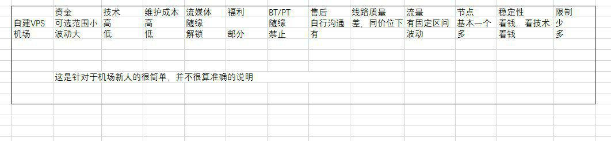
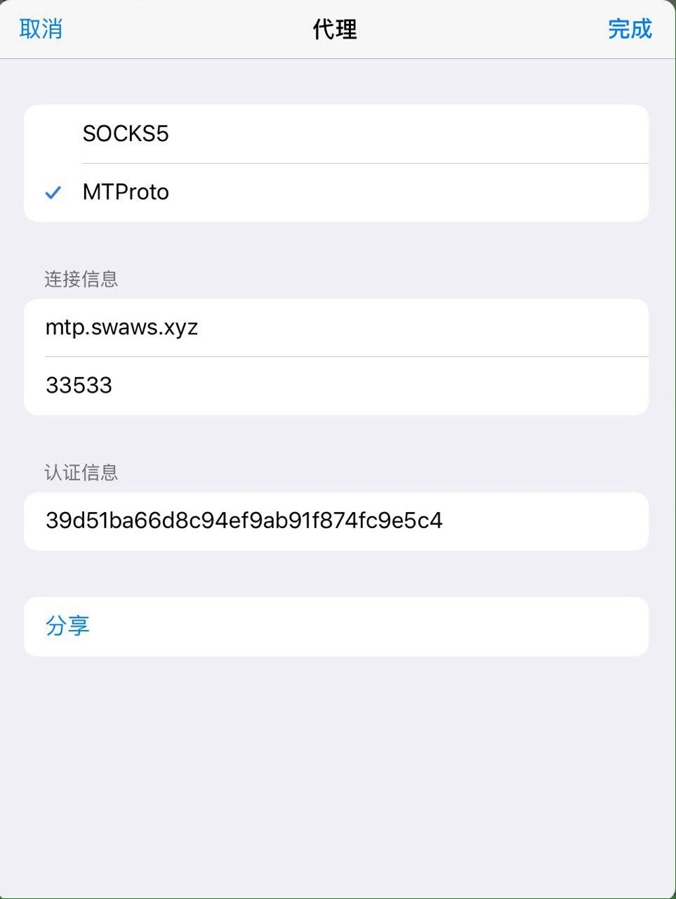

| 首页 | 公告 | Win/Office链接 | 使用教程 | 激活专区 | 装机必备 | 软件推荐 | 视频 |
下面内容大部分来源于《一份不负责任的机场使用手册.pdf》（转载），优化删减了部分内容，如有需要，可以观看原版。
在线网页：一份不负责任的机场使用手册
如果有不懂的名词，可以先记住，在2.1节查看注解。
其实这个很好解释。我们常用的SS/SSR 都是纸飞机的图标，所以我们有时也把这类软件和他们的衍生版叫做小飞机。而机场则可以认为是提供这类软件服务的运营商。
我看别人自建或是合租一个VPS也用的好好的，机场的优势在哪里呢？有图↓

有部分热心人士，会分享属于自己的节点信息，以自建居多。这些信息主要集中在 GitHub 和 TG 群组，使用体验有好有差，部分情况下会需要不断改变订阅链接，需要你仔细衡量你的需求/体验/成本。
不做评价。
直连就看你脸，你的流量直接出国，过墙。中转使得出国相对更稳定一点，BGP 是中转的一种方式，有的过墙有的不过。IPLC（也称专线）不过墙，目前机场语境下的 IPLC 主要的是指阿里云内网。如深港即深圳阿里云——香港阿里云，点对点连接。线路需要落地，不同的落地决定了你可使用的互联网服务的不同，而落地，即你访问目的所识别的 IP 归属：家宽，商宽，IDC 等。
通用语境下,专线应该是物理专线。海缆走的流量的绝大部份是公网流量，极少部分是专线流量。
不同的线路决定了流量价格的不同，因此，你需要对你的使用场景和需求做一个评估，想好干什么。比如要看视频，需要网速快；或者说玩游戏，需要低延迟，然后根据需求再决定购买什么套餐或选择什么节点。
我大概明白自己的需求了，我要到哪里选择合适我的机场呢？
我得到了推荐，我要如何判断他们的具体水准和适合我的程度呢？那些发链接和别人说的aff是什么意思？
这个就需要你自己判断了，如果你选择采信整体上处于独立状态的建议，就可以选择你自己相中的机场购买尝试。
aff则是推广链接的缩写，机场希望发动自来水，促进人员的增长。而通过aff链接注册的账户，一般会赠送的有余额或者流量，而推广的人也会获得金额或流量，简单说就是你好我好大家好。
这些aff可信吗？可以参考下一问的内容。
我还是有点担心，这些新机场值得信赖吗？他们会盗取贩卖我的个人隐私吗？
他人做事，除了极少数脑子抽的，都会考虑成本和收益。你觉得他们对你的这些信息的投入和所得会对等吗？同理也可以解释，为什么国家不抓个人翻墙，要抓也是抓机场主（笑）。
新机场处于扩张阶段，一般来说对新用户优惠多，节点会处在增加阶段，部分可能手忙脚乱的。
但在此处要注意，部分新站是有捞一笔就跑的打算的。一般来说，一切服务都跟成本挂钩，线路质量好，就不太容易跑路，全是直连的还可以随时结束服务的如 AWS，Azure，GCP 等，这些在非特殊时期或出于宣传，测速都会很好看，遇到类似这种情况的就需要你提高警惕了。有家宽，商宽或其他长期合同约束的落地，相对可靠性高于刚才提到的。
我可以退款吗？有免费体验吗？机场跑路了怎么办？
能否退款以各机场自己的条款为准，一般注册/支付的时候都可以看见：不允许退款（笑）
免费服务请注册后登录查看。
跑路啊，那就......跑路呗，也没有办法不是。
为什么很多网站的界面那么相象呢？他们是同一家吗？
机场行业如今已经很成熟了。各级人群构成了一个体系完整，分工合作？的行业。有线路销售，有网站面板解决方案，有技术支持，有人负责黑别人，有代理。在 tg 群组里，你能看到形形色色的人，尤其是各种账号的贩卖和合租群。
机场的界面相似只是因为他们采用了相同的网站搭建方案。大部份网站使用了 sspanel，你可于页面底部可看到 staff 标识，点击即可查看其有关信息。
1.11 注册和购买
我下定了决心，选择了一家机场。请问，我如何进行购买和使用呢？
通常来说，在他人给你推荐的时候一般会给你相应的注册链接，你可以打开链接注册，注册后即可购买套餐。一般注册后在网站内你可以看到相对应的TG群组，建议加入群组，这样有问题可以及时得到反馈。
注意：通常情况下，注册而不购买套餐的账号都会在不久后被删除，部分网站即使充值而不购买套餐也会被删号，请仔细考虑。
建议机场网址尽量在电脑打开，方便扫码支付，毕竟手机支付需要截图。
electron-ssr
Debian系统请下载“.deb”后缀的安装包，深度Deepin系统是基于Debian系统二次开发，也使用.deb专用安装包。
其他Linux系统请使用通用安装包“.AppImage”。
代理软件皆为收费软件，想要免费使用可以通过下载ipa安装文件导入安装。
注意：ipa安装文件需要使用爱思助手或其他软件导入安装，无法直接下载安装。
shadowrocket链接（美区）
quantumult链接（美区）
quantumult X链接（美区）
kitsunebi链接（美区）
订阅，是多个服务器节点的集合。
常见的订阅有SS/SSD、SSR和v2ray，这些订阅链接都不相同，连接方式也不同。部分网站有通用订阅，即一个订阅链接包含了SS/SSD、SSR、v2ray这三种。
下载安装代理软件后，你需要添加服务器节点/订阅才可使用。添加服务器节点/订阅时，请根据你使用的软件选择服务器节点/订阅，选择错误会导致添加失败。
在添加完订阅并且成功更新以后，您即可使用订阅当中的任意一个服务器节点进行上网。
每行一个订阅。所有订阅皆是网上共享的免费订阅，网速、延迟可能不尽人意。
https://raw.githubusercontent.com/ssrsub/ssr/master/ssrsub
https://heikejilaila.xyz/keji.php?id=22c7b9fdda20bb7405b270cd75971f66
你可以通过链接/二维码/手动输入的方式添加代理。
链接：tg://proxy?server=mtp.swaws.xyz&port=33533&secret=39d51ba66d8c94ef9ab91f874fc9e5c4

你可以点击此处获取推荐。